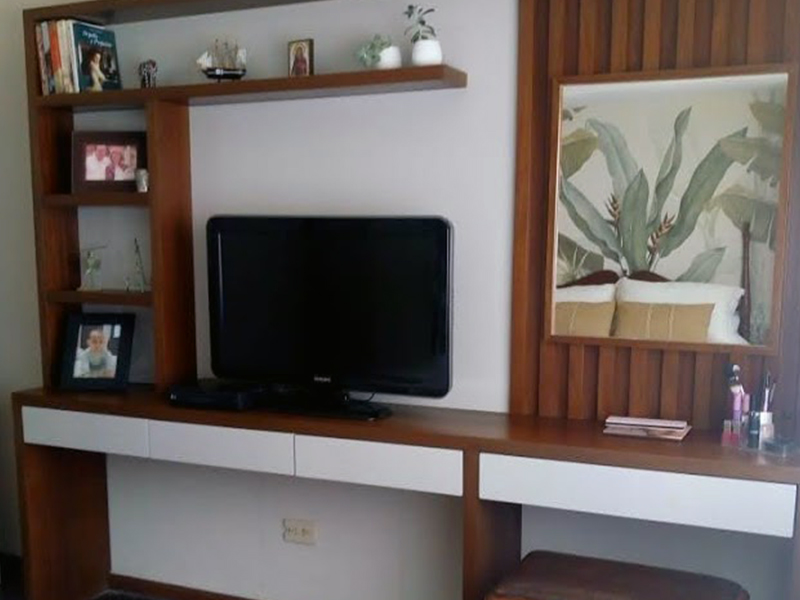
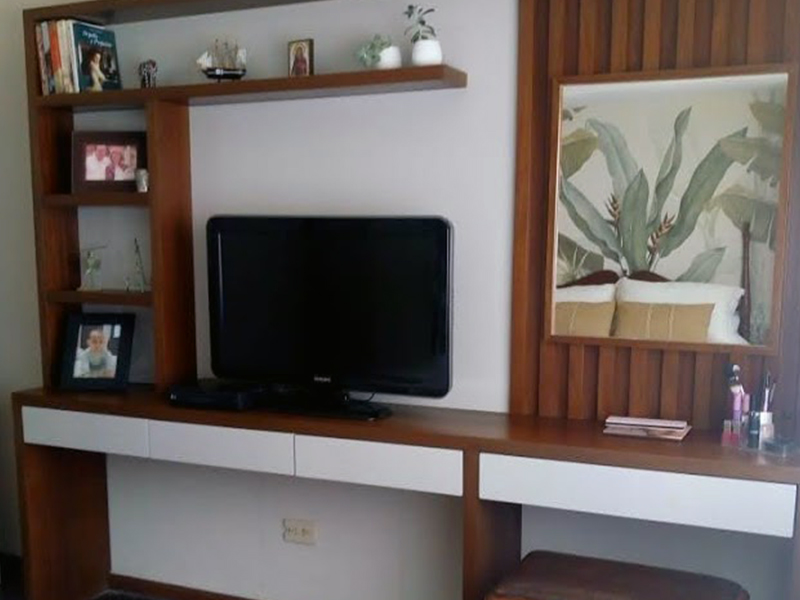
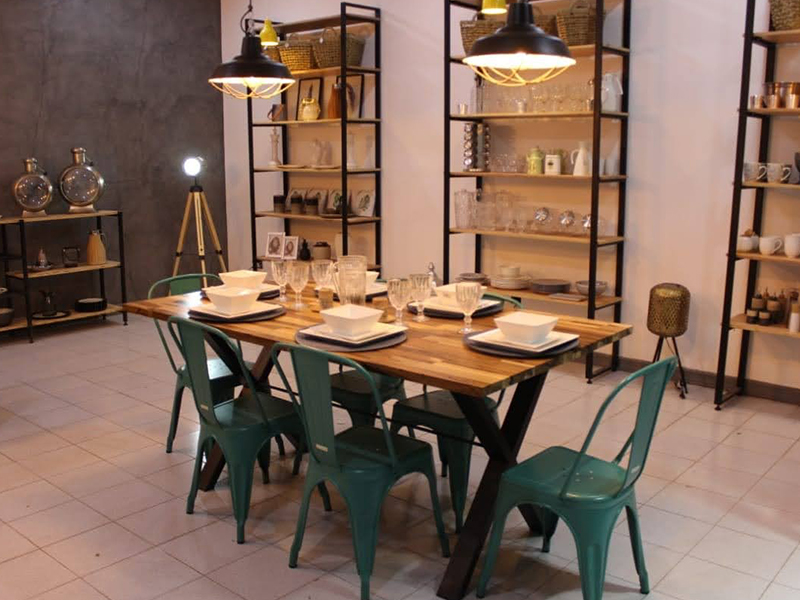
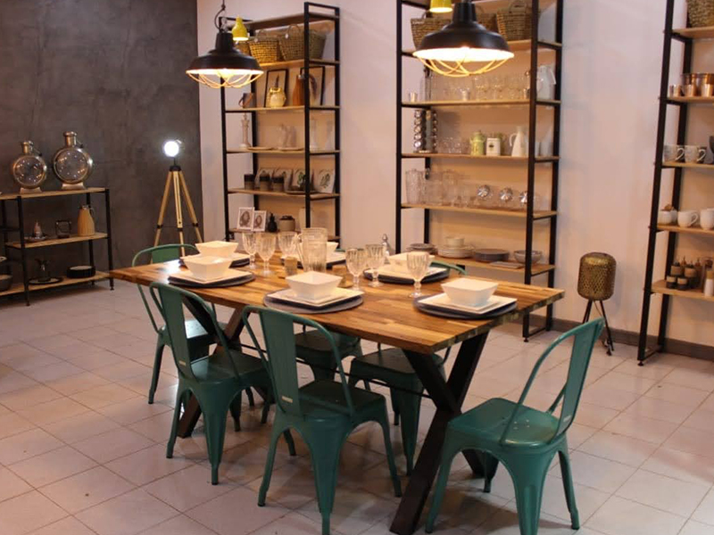

Kalich Trabajos Realizados
Obra: Diseño de habitacion adolescente.
Ubicación; Country del Jockey, Yerba Buena Tucumán - Año: 2018


Obra: Habitacion matrimonial
Ubicación: Yerba Buena, Tucumán - Año: 2018
 



Obra: Diseño de local comercial Diseño de muebles, ubicación, iluminación, y elección de color envolvente.
Ubicación: Alberdi, Tucumán - Año: 2020
 


Obra: Diseño de local comercial BRB Venta de amoblamientos
Ubicación: Yerba Buena - Año: 2020


Obra Vittalia, diseño de salas de espera y consultorios médicos
Ubicación: San Miguel de Tucumán - Año: 2020